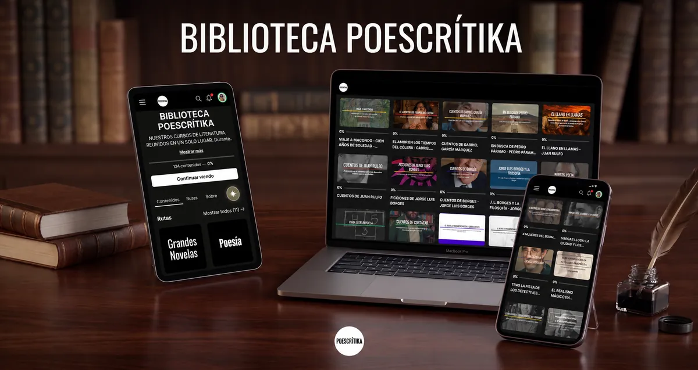
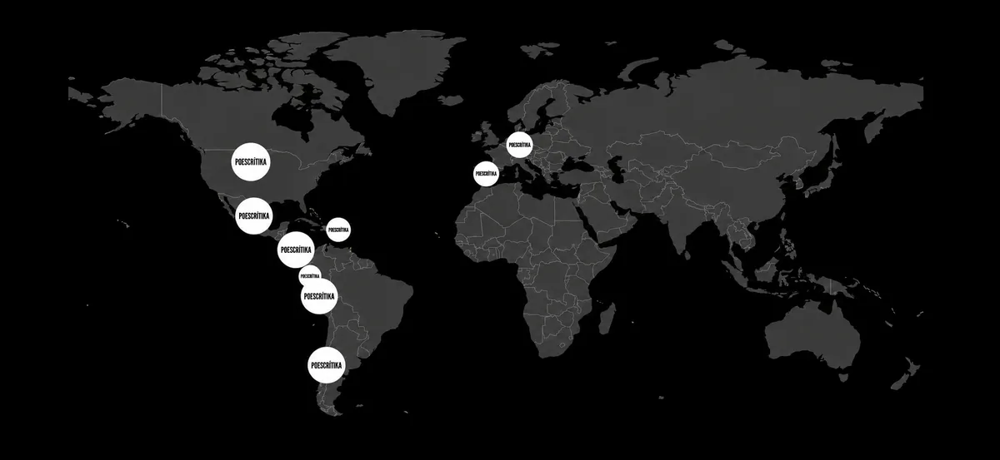

Plan mensual
14 USD al mes
Acceso completo a la Biblioteca. Se renueva cada mes y puedes cancelar cuando quieras. Ideal para conocer la Biblioteca o ver a fondo un curso concreto.
Empezar 7 días gratisDespués, 14 USD al mes
Lee a Borges, Rulfo, Sor Juana, Cortázar y García Márquez con otros ojos.
Más de 30 cursos de literatura en video · Más de 800 lectores de 9 países
7 días de garantía de devolución completa
Se pide tarjeta para activar la prueba. Si cancelas antes del día 7, no se te cobra nada.En Poescrítika llevamos varios años compartiendo el gusto por leer: hemos impartido más de 30 cursos para analizar las grandes obras de la literatura y entender a sus autores. La Biblioteca reúne todo ese acervo en un solo lugar: más de 200 horas de clases en video, para que las disfrutes cuando quieras y desde donde quieras. Y la colección sigue creciendo.
Un fragmento real del curso "Viaje a Macondo", sobre Cien años de soledad, de Gabriel García Márquez.
Se pide tarjeta para activar la prueba. Si cancelas antes del día 7, no se te cobra nada.
Cada curso incluye todas sus sesiones grabadas, tal como se impartieron en vivo. Dentro de la plataforma también los encuentras organizados en más de 10 rutas de aprendizaje, por autor y por tema, para que sepas por dónde empezar; un mismo curso puede estar en varias rutas.
Y la lista sigue creciendo.
No necesitas conocimientos previos, solo curiosidad y ganas de disfrutar más la literatura.

Abraham Truxillo (México, 1983) es poeta, ensayista y narrador, y profesor de Poescrítika, escuela de literatura, donde más de 800 lectores de 9 países han tomado sus cursos. Es licenciado en Letras Hispánicas por la Universidad Nacional Autónoma de México.
Es autor de los libros de poesía Postales del ventrílocuo (Ediciones Sin Nombre, 2011), Huracán. Antipoema (Dogma, 2025), Bestiario marino (Medusa, 2025) y Bolero Techno (Manofalsa, 2025). Ha colaborado en revistas y suplementos culturales como Revista de la Universidad de México, Letras Libres, Tierra Adentro, Casa del Tiempo, La Jornada Semanal y Laberinto de Milenio Diario, entre otros. Sus poemas y cuentos se han incluido en antologías y volúmenes colectivos de México, El Salvador, Argentina, Francia y Perú.
“Tengo la fortuna de compartir mi pasión por la literatura con cada lector que llega a mis clases”.

Acabo de ver la clase grabada, Abraham. La disfruté muchísimo. De verdad que la clase estuvo GRANDIOSA.
HaideéMe uno a los agradecimientos a Abraham por permitirnos apreciar tantos nuevos detalles que hacen aún más apetitosa la lectura de 100 Años de Soledad.
ÁlvaroAbraham, eres un excelente ponente, tu conocimiento, respeto y amor por la literatura son contagiosos y sumamente inspiradores.
Claudia


Haz clic en el plan mensual, semestral o anual. En la página de pago segura de Hotmart, marca «Quiero un periodo gratis» para empezar con 7 días gratis.
Cuando se registra tu suscripción, Hotmart te envía un correo para crear tu contraseña. Guárdalo; si no lo ves, revisa tu carpeta de correo no deseado.
Desde el primer día puedes ver cualquier curso, sin restricciones.
Cada sesión, cuantas veces quieras y en el orden que prefieras, mientras tu suscripción esté activa.
Cada curso en vivo costaba 70 USD. Más de 30 cursos sumarían más de 2,000 USD; en la Biblioteca los tienes todos desde 14 USD al mes.
Todos los planes incluyen la Biblioteca completa y empiezan con 7 días gratis.
14 USD al mes
Acceso completo a la Biblioteca. Se renueva cada mes y puedes cancelar cuando quieras. Ideal para conocer la Biblioteca o ver a fondo un curso concreto.
Empezar 7 días gratisDespués, 14 USD al mes70 USD cada 6 meses
Equivale a 11.67 USD al mes.
Acceso completo durante seis meses: ahorras 14 USD, pagas 5 meses y recibes 6. Se renueva cada seis meses y puedes cancelar cuando quieras. Ideal para recorrer varios cursos a tu ritmo.
Empezar 7 días gratisDespués, 70 USD cada 6 meses126 USD al año
Equivale a 10.50 USD al mes.
Acceso completo durante doce meses: ahorras 42 USD, pagas 9 meses y recibes 12. Se renueva cada año y puedes cancelar cuando quieras. Ideal para recorrer las rutas completas con calma.
Empezar 7 días gratisDespués, 126 USD al añoAsí activas tu prueba: en la página de pago se pide tu tarjeta y marcas la casilla «Quiero un periodo gratis». Si cancelas antes del día 7, no se te cobra nada.
Los precios están en dólares como referencia. Hotmart te muestra el monto exacto en tu moneda, con los impuestos de tu país, antes de que confirmes.
Si la Biblioteca no es para ti, te devolvemos tu dinero completo.
Además de tus 7 días de prueba gratis, tienes 7 días de garantía a partir de tu primer pago: si decides que la Biblioteca no es para ti, pides la devolución y recibes tu dinero completo.
La garantía aplica a tu primer pago; las renovaciones no tienen devolución.
No. Cada curso te da el contexto necesario desde la primera sesión. Hay quien ve el curso primero y lee la obra después, con otros ojos; hay quien avanza en la lectura al mismo tiempo, y quien vuelve a un libro que leyó hace años. Las tres formas funcionan.
Todos los planes empiezan con 7 días gratis, para que conozcas la Biblioteca con calma. Para activarlos se pide tu tarjeta y, en la página de pago, marcas la casilla «Quiero un periodo gratis». Si cancelas antes del día 7 desde tu cuenta de Hotmart, no se te cobra nada. Si decides quedarte, el primer cobro llega el día 8 y, a partir de ahí, todavía tienes 7 días de garantía para pedir la devolución completa.
Sí. Vamos sumando cursos nuevos a la Biblioteca conforme quedan listos para la plataforma, por eso no tienen una fecha fija y no siempre son los estrenos más recientes. La lista de esta página muestra lo que hoy está disponible.
No. Por derechos de autor, la Biblioteca se compone solo de los videos. Todo lo que necesitas para seguir cada curso está en ellos: el contexto, los pasajes y el análisis completo. Los libros son fáciles de conseguir en cualquier librería o biblioteca.
La Biblioteca está pensada para aprender a tu ritmo, así que no incluye resolución de dudas. A cambio, tienes algo que no había en vivo: puedes pausar, repetir una explicación las veces que quieras o volver a una sesión meses después.
En tu computadora, tableta o celular, con conexión a internet. En la aplicación de Hotmart para celular puedes descargar las clases para verlas sin internet; no es posible guardarlas en tu computadora. Tanto las clases en línea como las descargadas en la aplicación se pueden ver mientras tu suscripción esté activa.
No. La Biblioteca está pensada para el placer de leer y de aprender, sin exámenes ni tareas. Lo que te llevas es una manera más profunda de leer.
Tarjeta de crédito o débito y PayPal; en algunos países, también pagos en efectivo. En la página de pago de Hotmart verás las opciones disponibles para ti. Para empezar con los 7 días gratis se pide tarjeta.
Sí. Tu suscripción se renueva sola cada mes, cada seis meses o cada año, según tu plan, y puedes cancelarla en cualquier momento desde tu cuenta de Hotmart; conservas el acceso hasta el final del periodo que ya pagaste. También puedes pasar a un plan más largo cuando quieras.
Primero tienes 7 días gratis para conocerla; si cancelas antes de que terminen, no pagas nada. Y si ya se hizo tu primer cobro, tienes 7 días más para pedir la devolución completa, sin preguntas. La garantía aplica a tu primer pago, no a las renovaciones. Queremos que te quedes porque disfrutas los cursos, no por compromiso.
Sí. Se solicita desde tu cuenta de Hotmart, en el apartado de tus compras.
Más de 30 cursos, más de 200 horas de análisis literario y una colección que sigue creciendo, en un solo lugar. Empieza hoy a explorar las grandes obras con más profundidad y más placer.
7 días de garantía de devolución completa
Se pide tarjeta para activar la prueba. Si cancelas antes del día 7, no se te cobra nada.Únete a nuestro grupo de avisos en WhatsApp y recibe las últimas noticias y actualizaciones: los cursos nuevos en cuanto se suman y las novedades de Poescrítika. Solo publicamos nosotros.
Unirme al grupo de avisosGrupo de WhatsApp, solo avisos